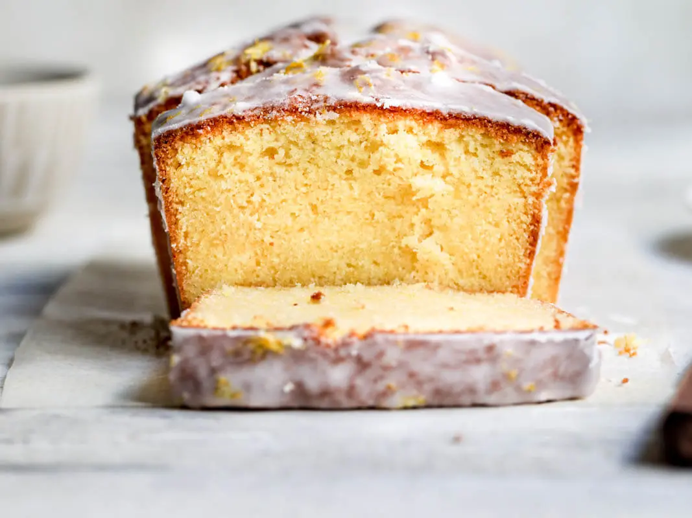

Budín de limón

- 200 gr de manteca
- 200 gr de azúcar
- Ralladura de 3 limones
- 4 huevos
- 125 cc de jugo de limón
- 350 gr de harina 0000
- 15 gr de polvo de hornear
- 1 pizca de sal
- 250 gr de azúcar impalpable
- Jugo de limón c/n